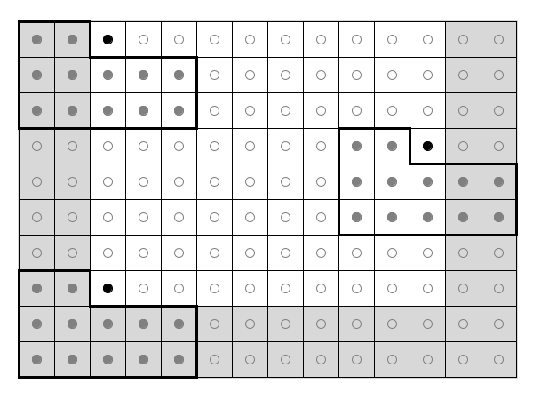

Lossless Compression for Raster Data using Optimal Predictors
Introduction
The Gridfour software library recently added a supplemental data compression module that offers a significant improvement in data compression ratios for its integer-based raster data sets. The implementation, which is designated LSOP, is based on the method of Optimal Predictors proposed by Smith and Lewis (1994). LSOP is a lossless data compression technique that offers good compression ratios and good data-access speeds.
Although the algorithm used by the LSOP compressor was described in 1994, it has been largely overshadowed by lossy techniques based on wavelets or the discrete cosine transform. But because it is lossless, Smith and Lewis' Optimal Predictor method has the advantage of preserving the exact values provided by its input data. This feature makes the compression technique suitable for archival, reference, and data-distribution applications. Optimal predictors also have the attractive characteristic of requiring a light processing load. By implementing the Optimal Predictor algorithm as part of its software library, the Gridfour project hopes to direct some overdue attention to this under appreciated technique.
The algorithm used by Smith and Lewis was published in Computers & Geosciences (Smith & Lewis, 1994), but an earlier version of their paper (Lewis & Smith, 1993) may be obtained without fee from the Cartography and Geographic Information Society website. The Lewis & Smith paper provided the basis for the implementation used for Gridfour. One of the paper's authors, Derek Smith, also contributed to an "overview" paper that gives much useful background on the ideas used for data compression (see Kidner & Smith, 2003).
How this Article is Organized
This article is organized into three parts. The first part discusses the Optimal Predictor technique itself. The second discusses implementation details for a Java-based API that is available through the Gridfour Software Project. One of the goals of the Gridfour project is to explore data compression techniques for raster (grid) based data sources. To that end, we have created an software library called GVRS that provides a testbed for experimenting with compression techniques. While the second part of this article does touch on GVRS, the focus of these notes is the Optimal Predictor technique itself. Therefore, I've tried to limit the discussion of Gridfour-specific elements to those details that relate directly to creating a viable Optimal Predictor implementation. Part 3 of the article concludes with a brief note on ideas for future work.
If you prefer, you can jump to the sections of interest using the following links.
- Part 1: Optimal Predictors
- Performance: Indicates the performance you can expect using Optimal Predictors.
- How it works: Provides background concepts and theory for the technique.
- Part 2: Implementation Details
- Design Choices and Storage Layout: Describes the geometry used for the predictor and shows how storage elements are configured in the output data encoding.
- Floating-point Operations: Discusses how floating-point operations are implemented to ensure numeric stability and portability across different programming languages and operating systems.
- Part 3: Future Work
- References
Part 1: Optimal Predictors
Predictors and Data Compression
The idea of using a predictor to improve data compression is a well known concept. Basically, we consider that if we had a function that could predict the values in a data set with perfect accuracy, we could represent the data set with almost no storage space at all. In most cases, of course, the best we can hope for is a predictor that offers a good approximation of the values in a data set. But, armed with such a predictor, we don't need to store the data itself. Instead, we store a set of correction factors (residuals) that allow us to recover the original data values from the predictions. Given a good predictor, the magnitude and variability of these correction factors will be small. And a set of symbols with small magnitude and minimal variability is just the kind of data that lends itself well to conventional compression techniques such as Huffman Coding or the well-known Deflate algorithm. So, in a predictor-based compression technique, we don't store the actual data, but rather a set of prediction parameters (to drive the prediction function) and its associated correction factors.
Before we introduced Optimal Predictors to the Gridfour software library, it already included three simpler predictors: Differencing, Linear, and Triangle. These were described in an earlier article (see Lucas, 2019). While the library still includes these legacy predictors, the Optimal Predictor method usually yields better results.
Performance
There are two factors to consider when assessing the performance of a data compression technique: compression ratios and access speed. Since the motivation for implementing Optimal Predictors was to improve the data compression ratios for the Gridfour library, we will being with that.
To assess the data-compression performance of the Optimal Predictors implementation, I tested three Digital Elevation Models (DEMs). The first two, ETOPO1 and GEBCO 2020 give global-scale elevation data with a grid spacing of 1 minute of arc (about 1855 meters between points at the equator) and 15 seconds of arc (about 463 meters between points) respectively. Both of these products were compiled from multiple sources and cover the entire world in a single grid-based data file. The third source of test data is taken from the Shuttle Radar Topography Mission (SRTM). The SRTM data is available in several thousand separate files. Each of these files covers a single one-degree square with a resolution of 1 second of arc (about 30 meters spacing at the equator).
The table below shows the results of data compression operations performed on the ETOPO1 and GEBCO 2020 data sets and an SRTM file. Storage sizes are given in bits per sample (bps). The SRTM file gives elevation data over a one-degree square area that includes the city of Paducah, Kentucky (KY) USA. That particular sample was selected because its local terrain was sufficiently varied to fully exercise the Optimal Predictor algorithm, but not so radical as to produce atypical results. The Paducah sample was was also featured in Kidner & Smith's 2003 overview paper. The earlier work provided a useful basis of comparison for evaluating the Gridfour results during our investigation
| Product | Grid Spacing | Cells in Grid | Uncompressed | LSOP | Reduction |
|---|---|---|---|---|---|
| ETOPO1 | 1 minute of arc | 233 Million | 16 bps | 3.66 bps | 22 % |
| GEBCO 2020 | 15 seconds of arc | 3.7 Billion | 16 bps | 2.87 bps | 18 % |
| SRTM (Paducah, KY) | 1 second of arc | 12.9 Million | 16 bps | 1.92 bps | 12 % |
In order to manage large raster data sets such as ETOPO1 and GEBCO_2020, the Gridfour library's GVRS file format divides the overall collection into subsets called "tiles". For the test results given above, the partitioning scheme was specified to use tiles 120 rows high and 240 columns wide. Each tile is compressed independently. When a tile is compressed, the Gridfour library uses a brute force method for compressing the data: it reduces the tile using each of the three legacy predictors (Differencing, Linear, and Triangle) and the new Optimal Predictors method. Then, it choses the one that produces the best results. As part of this process, the prediction residuals are compressed using either Huffman coding or the Deflate algorithm. The compressed sizes are compared and the combination that produces the best results is used to store data to a file.
In some of our tests, the selection method chose to use one of the legacy predictors rather than the new LSOP method. The legacy methods do entail less overhead (fewer prediction parameters) than the LSOP method. So in areas where the data had low variability and could be predicted with similar accuracy by all four methods, LSOP did not offer a significant advantage. Thus, the choice of predictor reflected the nature of the data. The LSOP predictor proved to be the most effective predictor in 90.1 % of the tiles for ETOPO1 and 53.7 % of the tiles for GEBCO_2020. For SRTM, the method of Optimal Predictors was used in almost all cases
Total Reduction for Storage Size
The table above showed the savings when the supplemental Optimal Predictors technique was added to the standard suite of predictors used to compress data in the Gridfour system. But you may be wondering how well the Gridfour system does overall when compressing files. The table below shows the results for the three example products. I do, however, have to add one qualification. All three products give elevation and bathymetry values in meters ranging from -10952 (maximum depth) to 8627 (maximum elevation). These values could comfortably be stored in a standard two-byte (16 bit) integer format, which is exactly what GEBCO 2020 and SRTM use. But the raw ETOPO1 data set uses four-byte integers. So its file size is actually twice as large as it needs to be. To give a fair comparison, I divided the size of the ETOPO1 source file by two.
| Product | Grid Dimensions | # Values | Source Size | Compressed Size |
|---|---|---|---|---|
| ETOP01 | 10800 x 21600 | >233 Million | 446.3 MB (890.1 MB) | 101.63 MB (22.84%) |
| GEBCO 2020 | 43200 x 86400 | >3.7 Billion | 7119.1 MB | 1279.06 MB (17.97 %) |
| SRTM (Paducah, KY) | 3600 x 3600 | >12.9 million | 25.3 MB | 2.99 MB (11.8 %) |
One of the trends that is apparent in the tables above is that data sets with denser grid tend to compress more readily than those with a coarser grid. In general, when grid points are closer together in space, there is more correlation between adjacent samples and the Optimal Predictor technique is better able to predict the value of neighboring samples. Better predictions result in small residuals (errors). And smaller residuals tend to improve compression ratios.
Part of the compressibility of data also depends on the presence of features and artifacts that are small relative to the sample spacing and which exhibit unpredictable behavior... In other words, the presense of noise components that reduce predictability lead to less effective data compression. Often, the software systems that create Digital Elevation Model products remove noise and small features as part of their data quality assurance and filtering processes. So the features that do remain are generally significant and should not be neglected by a data compression implementation.
Compressability for high-density data from the SRTM survey
I will conclude the discussion of the Optimal Predictor's performance with a little more detail about the SRTM data set. In 2000, NASA's Shuttle Radar Topography Mission (SRTM) collected elevation data for much of the world using a sophisticated synthetic aperature radar apparatus. NASA and the U.S. government have generously provided the results of this survey for international public use (NASA, 2020). The SRTM data is available in various forms. The results in the table below are based on the analysis of data issued in GeoTIFF file format in 1-degree squares with a grid-spacing of 1 second of arc. This configuration leads to a 3600x3600 grid with a cell size of about 30 meters at the equator. The grid's horizontal spacing is less at higher latitudes due to longitude convergence. The data is limited to terrestrial (land) areas and includes 14277 separate data files (that count is based on a search at the USGS Earth Explorer website). NASA names its SRTM files using the coordinates of the southwest corner of the area of coverage. To provide a more recognizable identification, the SRTM files in the table below are labeled with the names of places that lie within their 1-degree areas of coverage. The degree to which SRTM data compresses depends on the variability of the source data. But for many of the sample files, the method of Optimal Predictors achieves better than a 8-to-1 reduction in the size of the data set.
| Data Area | Bits per Elevation | File Name (SE Corner) |
|---|---|---|
| Sioux Falls, South Dakota, USA | 1.7366 | n43_w097_1arc_v3.tif |
| Paducah Kentucky, USA | 1.9142 | n37_w089_1arc_v3.tif |
| Pontypridd, Wales | 1.7761 | n51_w004_1arc_v3.tif |
| Padua, Italy | 2.2329 | n45_e011_1arc_v3.tif |
| Poloniny National Park, Slovakia | 1.9771 | n49_e022_1arc_v3.tif |
| Atacama Desert, Chile | 2.0978 | s24_w070_1arc_v3.tif |
| Olduvai Gorge, Tanzania | 2.2823 | s03_e035_1arc_v3.tif |
| Auckland, New Zealand | 1.2539 | s37_e174_1arc_v3.tif |
Access Speed
The mechanics of reading raw bytes from a data file are roughly the same whether a Gridfour file is stored with or without the LSOP enhancement. But the decompression operations for LSOP require a much larger number of floating-point and array-access operations than the standard Gridfour predictor techniques. This overhead leads to an increase in time-to-read files of approximately a factor of two. For example, the ETOPO1 product described is organized into 5400 blocks of 43200 data samples each. Adding the LSOP compression to the file resulted in an increase in the time to read that data from 4.02 seconds to 8.15 seconds. Considering that the ETOPO1 data set contains over 233 million data, the fact that it required four extra seconds to unpack it does not seem onerous.
Future work on the LSOP compression may involve exploring different coding techniques in an effort to improve access speeds. When the work is completed, the relevant techniques will be discussed in future versions of this article. For the present, the primary concern of this article is the effectiveness of the Optimal Predictor algorithm for the reduction of data storage size.
How it works
The concept of using predictive algorithms to improve data compression was introduced in a previous article in this series (Lucas, 2019) In practice, raster data often compresses poorly when processed by conventional data compressors such as Huffman coding or the popular Deflate algorithm used in the zip format. Predictive algorithms implement an invertible (bijective) transformation that converts the source data from a raster grid into a form that exhibits a greatly improved degree of redundancy and, thus, is more suitable for compression by conventional means. To do so, predictive techniques implement models that estimate the value at various grid points based on the values of their immediate neighbors. In practice, the residuals (error terms) for the predictions tend to have a small magnitude and exhibit a high degree of redundancy from grid cell to grid cell. Thus the sequence of residuals tends to compress much more effectively than the data from the source grid. With appropriate coding, it is possible to reconstruct the original data from the residuals. So the use of predictors leads to a lossless data compression technique that produces a substantial reduction in the storage requirements for the data.
Smith and Lewis used the classic method of Lagrange Multipliers to analyze a data set and identify parameters for a predictor that were optimal in the sense that the mean error of the residuals tended to zero. This feature led to output data set with statistical properties that made it well suited to data compression by conventional techniques such as Huffman coding or Deflate. To see how Smith and Lewis’ Optimal Predictors work, we will begin with a simpler technique, the Triangle Predictor, which was introduced by Kidner and Smith in 1993.
The Triangle Predictor
The Triangle Predictor estimates the value for a grid point, P, by assuming that it lies on a plane surface determined by the coordinates of its three neighbors A, B, and C. The geometry for the points used in the computation is specified as shown in the figure below:

Given a grid with uniform spacing and sample points A, B, and C, the predicted value for point P is simply

The equation above assigns coefficients of 1 (or -1) to each of the source data values. It is natural to wonder if there might be a different set of weighting coefficients that describe the data better. For example, consider a region characterized by roughly parallel ridges as shown below. In parts of the region where the ridges run east and west, sample points aligned in a horizontal direction might be better predictors than those in the vertical. Thus the value A might be a better predictor of P than the values for C and B. In others, where the ridges have a diagonal orientation, the value for B might be a better predictor than either A or B. Obtaining the best predictions depends on having a way to pick an optimal set of parameters.

Lagrange Multipliers
The method of Lagrange Multipliers resembles that of the method of Ordinary Least Squares. Because the least-squares technique is better known than Lagrange, we will begin with that method before moving to Lagrange Multipliers.
For the three-point case, we wish to find suitable
coefficients  for a predictor in the form
for a predictor in the form

The error term, or residual,  is given as
is given as

The classic least-squares estimator attempts to find the set of coefficients
that would minimize
the sum of the squares of the

From calculus, we know that for the choice of coefficients that results in the minimum of the error function, the partial derivatives with respect to each of the coefficients will be equal to zero:

Based on these observations, we can combine the partial derivatives to construct a system of linear equations that contain the desired coefficients as variables. Solving for those variables yields the parameters for an estimator function that minimizes the sum of the squared errors.
Adding Constraints for Optimization
The method of Lagrange Multipliers extends the Ordinary Least Squares technique by permitting the specification of one or more constraints on the minimization result. The method makes a tradeoff, permitting the overall sum of the squared errors to increase slightly but guaranteeing that the constraint condition is met by the solution. In the case of the Optimal Predictors technique, Smith and Lewis specified that the mean error for the predictors must equal zero

This additional constraint is the key to the success of the Optimal Predictors method. While Ordinary Least Squares guarantees a minimum error, there is no requirement that the mean error it produces is zero. In fact, it often is not. But Smith and Lewis reported that by adding the constraint, they could improve the compression ratios by about 35 % (Lewis & Smith, pg. 256). So while we might expect that allowing the overall sum of the squared errors to increase might degrade the effectiveness of the predictor, it turns out that just the opposite is true. The mean-error-of-zero constraint improves the overall redundancy in the set of residuals produced by the predictor. This increase in redundancy, in turn, leads to better compressibility.
To get a sense of why this improvement occurs, let’s consider an example where we are storing data using the Huffman coding compression technique. Huffman coding works best when the frequency distribution for symbols in an encoded data set is strongly non-uniform. So if a predictor could produce a set of residuals in which the value zero occurs much more frequently than other values, it will tend to compress well using Huffman.
Let's assume that the predictor residuals fall into a normal distribution, so that the majority of the error values lie close to the average error. Suppose that a data set exists in which Ordinary Least Squares produces an average error of 0.5. Since the compression operates on integer values, some of the residuals in the mid range will round up to one and some down to zero. Thus the number of incidences symbols with a value of zero and symbols with a value of one will be about the same. Neither one nor zero will dominate the frequency distribution for residuals. The Huffman coding for such a data set will produce a relatively small reduction in storage size.
Now, suppose that using Optimal Predictors, we develop a set of predictor coefficients that produces an average error of zero. In that case, the number of residuals with a value of zero will be larger than those with a value of one. So we see that the output from Optimal Predictors is better suited for the Huffman encoding than the output from Ordinary Least Squares.
Configuration and Performance of Optimal Predictors
In addition to the three-coefficient Optimal Predictor described above, Smith and Lewis also implemented an eight-coefficient variation. Later, Kidner & Smith added 12 and 24-coefficient variations. The layout for these predictors is shown below.

Currently, the Gridfour implementation uses the 12 coefficient variation as the primary predictor for the LSOP implementation.
The following table gives some general statistics for the prediction using the 12-coefficient configuration over the ETOPO1 and GEBCO 2020 data sets and a selected SRTM file.
| ETOPO1 | GEBCO 2020 | SRTM (Paducah, KY) | |
|---|---|---|---|
| Mean error predicted values | -6.74E-5 | 8.99E-6 | 3.59E-6 |
| Mean absolute error | 4.78 | 1.74 | 0.88 |
| Percent integer residuals with zero value | 25.3 % | 43.4 % | 51.9 % |
| Avg. bits/sample | 3.66 | 2.87 | 1.92 |
When I discussed the ideas behind the Optimal Predictor method, I mentioned that the constraint applied for the Lagrange Multipliers derivation was that the mean error would be zero. Looking at the values in the table above, we see that the mean error is small, but non-zero. The reason for this is that the predictor coefficients derived by the code are stored in the form of four-byte (single precision) floating point values. The limited precision for floating-point formats means that the values stored for the predictor coefficients are not a perfect match for the actual optimal coefficients. They only approximate the true values. As a result, the mean error accumulates a slight offset over the course of being applied over the full collection of samples.
Note also that as the density of the samples increases, and the Optimal Predictor becomes more successful, the percent of samples with zero-valued residuals also increases. As this happens the statistical frequency for residuals tends to strongly favor the value zero. For Huffman coding, this preponderence of zero residuals leads to a shorter coding sequence for the residuals. Thus the size of the compressed data is reduced.
A perfect predictor, if such a thing could exist, would always produce residual values of zero. In such cases, the information content of the transformed data (e.g. its "entropy") would approach zero and the data could be stored with almost no disk space at all.
Derivation for Optimal Predictors
The equations and derivation for Optimal Predictors using Lagrange Multipliers is
discussed in detail in Lewis & Smith (1993).
Part 2: Implementation Details
Modules and Dependencies in the Java Implementation
The current implementation policy for the Gridfour project is to ensure that the core Gridfour module (GridfourCore.jar) has no external dependencies beyond the standard Java API. Determining coefficients for a 12-coefficient Optimal Predictor requires solving a system of 13 linear equations. The linear algebra and matrix operations required to find such a solution are not supported by the standard Java API. To perform these operations, the LSOP implementation required that the core module incorporate a small number of classes from the public-domain JAMA Java Matrix Project (NIST, 2012).
Design Choices and Storage Layout
As noted above, the current Gridfour implementation uses the 12-coefficient variation. If you refer to the source code for the implementation, you will note that the data elements and predictor coefficients are assigned variables named according to their position relative to the data cell of interest as shown below (for example u1, u2, u3, etc.)

One issue when working with any of the optimal predictor patterns is that they cannot be used to populate all the cells in the grid. For example, to compute the value at the prediction point P, the 12-coefficient pattern requires that there be two columns of populated cells to the left of P. It also requires populated cells immediately below the prediction point. So for the cells the lower-left corner of the grid, there are no candidate locations from which pre-populated cells can be found.
The figure below shows regions of the grid (in gray) that cannot be populated using the 12-coefficient predictor. We refer to the members of these regions as "uncovered cells". As the figure illustrates, the predictor can be moved to a variety of positions in the grid, but there are no valid positions that would allow the predictor to compute points in the uncovered regions. The two columns on the left, two rows on the bottom, and two columns to the right are all uncovered. Therefore, an implementation of Optimal Predictors must include alternate logic to pre-populate those cells before appling the 12-coefficient predictor.
The Gridfour implementation of the Smith and Lewis algorithm begins processing by using its simpler predictors to prepopulate the first two rows and first two columns of the grid. It then applies Optimal Predictors to populate the interior. The last two columns in the grid are also unreachable. So as each row is processed using Optimal Predictors, the last two columns in that row are processed using the Triangle Predictor. The steps are as follows:
- The first row and first column are populated using the standard Differencing predictor (see Lucas, 2019)
- The second row and second column are then populated using the simple Triangle predictor. The Triangle predictor itself requires an initialization, which is why the first step in the process depends on the Differencing predictor to populate the first row and column
- The Triangle predictor is used to finish the last two columns of the grid (which were unreachable to the Optimal Predictor).
- The Optimal Predictor is used to populate the interior of the grid.
Conventional compression techniques such as Huffman Coding and the Deflate algorithm use information about the statistical properties of the source data to identify redundancy and encode it in a more compact form. Because the two subdomains of the grid (the edge region and the interior) are processed using different predictors, their statistical properties are often quite different. While developing the Optimal Predictor code, I tested a variety of data products and confirmed that compressing the two sets of residuals separately almost always improved the overall reduction compared to compressing them as a single group.
Gridfour Processing Statistics
When designing a data compression implementation or specifying data compression parameters, it is often useful to review the summary data available from the Gridfour data compression library.
The text below shows the summary data printed by the Gridfour packaging utility that was used to process the SRTM elevation data for the Paducah data set. Recall that the SRTM data is packaged in separate files covering a 1-degree square area with a grid spacing of one second of arc. So the SRTM files give a 3600-by-3600 grid (some SRTM files at high latitudes give a 1800-by-3600 grid). In this case, the source grid was partitioned into 400 tiles of size 180-by-180 grid cells. Each tile was compressed separately.
When the predictor operates over the code, the residuals are serialized into streams of bytes. The bytes are then processed by a conventional data compression technique such as Huffman or Deflate. The choice of compressor is determined by compressing the data using both techniques and then selecting the one that produces the most compact results. For the Paducah test data set, the Huffman coding technique was preferred in 399 out of 400 cases.
The values in the entropy column indicate the variability of the residuals after the predictor is applied. They are computed using Shannon's Information Entropy formula (Shannon, 1949). In general, the larger the entropy value, harder it will be for a data compressor to reduce the size of the input. The fact that the entropy values for the outer rows and columns of grid cells are higher than for the interior is due to the use of the simpler and less effective predictors in the "unreachable" sections of the grid.
The overall entropy for the source data is given at the bottom of the printout. This value, 6.64, represents the state of the data before the predictors are applied. By using the predictors, the entropy in the data is reduced from 6.64 (pre-predictor) to and average of about 1.9 (post-predictor, pre-Huffman/Deflate compression).
Codec Gvrs_LSOP12 Compression Output Predictor Residuals
Huffman (399 tiles, 99.8%)
Phase bits/sym bits/tile | len (bytes) avg-unique entropy
Outer rows/columns 2.6 2755.2 | 1072.0 13.9 2.4
Interior 1.9 58567.5 | 31328.0 13.9 1.8
Total 1.9 61379.6 | 32399.0 16.6 1.8
Deflate (1 tile, 0.3%)
Phase bits/sym bits/tile | len (bytes) avg-unique entropy
Outer rows/columns 3.2 3392.0 | 1072.0 29.0 2.8
Interior 2.2 67792.0 | 31328.0 43.0 2.2
Total 2.2 71272.0 | 32399.0 46.0 2.2
Mean error predicted values 3.591e-06
Mean absolute value of residuals 0.557
Percent integer residuals with zero value 51.876 %
File size: 3101064 bytes, 2.96 MB
Average bits per sample (estimated): 1.9142
avg value: 135.01946705246914
min value: -37
max value: 329
Entropy for input data 6.64 bits/sample
Floating-point Operations
The predictor used in the LSOP compressor is based on floating-point arithmetic. Writing the code for the LSOP predictor, encoder, and decoder, required strict attention to the way computer systems and the Java programming language perform floating-point operations. One of the most important considerations in the design of the GVRS file format is that data created on one system, or in one development environment (Java, C/C++, .NET, etc.), can be accessed software running on another. In order to support that goal, it essential that the floating-point arithmetic needed for the Optimal Predictor be reproducible in a consistent manner.
In order to ensure consistency, LSOP uses 4-byte, single-precision floating point arithmetic for its predictor. The Java classes related to Optimal Predictors are implemented using Java's strictfp keyword. All floating-point to integer conversions are all performed using Java's StrictMath.round() function. Similar capabilities are available for most modern development environments and programming languages.
Configuring a File to use Optimal Predictors
During construction of a GVRS file, the parameters for a file are specified using the GvrsFileSpecification class (see How to Package Data Using the GVRS Library.) A Java application can specify the use of the Optimal Predictors compressor, using the approach shown in the following code snippet:
import org.gridfour.gvrs.lsop.compressor.LsEncoder12;
import org.gridfour.gvrs.lsop.decompressor.LsDecoder12;
public static void addLsopToSpecification(GvrsFileSpecification spec) {
spec.addCompressionCodec("Gvrs_LSOP12", LsEncoder12.class, LsDecoder12.class);
}
The compression codec must be specified before a file is created. As noted above, the LsEncoder12 class depends on the JAMA matrix package. Once a file is created and fully populated, the encoder and the math library are no longer needed. So an application that accesses an LSOP-compressed data file on a read-only basis does not need to include these resources. Similarly, an application written in an alternate programming language would not have to implement a matrix algebra package in order to read LSOP-compressed data.
Future Work
Future work on Optimal Predictors would include potential improvements to the compression ratios as well as speed improvements for the decoding modules.
The 24-Point Predictor
Kidner and Smith (2003) reported that the 24-point variation of the Optimal Predictor (see above) usually produced better compression ratios than the 12-point variation used for the Gridfour Project. At this time, I have not implemented the 24-point variation. Clearly, the inclusion of additional sample points would lead to a more successful predictor. It is, however, possible that the reduction in data size due to better predictors would be degraded by the additional overhead due required for the 24-point predictor. The requirement for 24 predictor coefficients, rather than the 12 used by the current implementation, would add 48 additional bytes of overhead. Additionally, the larger predictor has a larger number of unreachable grid cells and would require 3 rows and 6 columns of initialization cells. Since the initialization cells compress less effectively than the interior, that larger initialization set would add more overhead than the smaller set used by the 12-point predictor. In view of these considerations, the question arises of whether the savings obtained from the more complicated predictor would be greater than the extra overhead it entails. The only way to find out is, of course, through implementation and testing. Such an implementation is a candidate for future work.
Potential Replacements for Huffman Coding
Entropy encoding techniques compress symbols according to a model of their expected frequencies, with common symbols being represented by fewer bytes than rare ones (Gibbons, 2019).
To compress raster data, the Optimal Predictor produces a set of residuals that are passed to a conventional data compression tool for final reduction. Testing reveals that the most successful compressors tend to be the entropy-based Huffman coding. There are at least two other entropy encoders that often achieve better compression ratios than Huffman: arithmetic coding and range-based Asymmetric Numeral Systems (rANS) encoding. Preliminary investigations into using these alternate systems were inconclusive. Future investigation may include a in-depth look at these encodings.
Motivation
Entropy encodings are based on probability. The more frequently a particular symbol (data value) appears in a message sequence, the higher the probability that the next member in a sequence will be that symbol. Higher probability symbols are encoded with shorter sequences, so the overall length of the output is reduced. The Huffman coding algorithm uses symbol probabilities to create an encoding that can be represented using a binary tree structure. When decoding a Huffman encoded message, bits in a sequence indicate which branch of the tree to follow (typically, 0 for left, 1 for right). As bits are read, the branches of the tree are followed until a termal node (i.e. a leaf) is reached, at which time the output symbol is identified. Because traversing a tree is a lightweight software process, decompressing a Huffman-coded message tends to be very fast.
Unfortunately, the fact that the probabilities are represented in the structure of a tree means that the actual probabilities for symbols can only be approximated as a sum of powers of 2 (i.e. 1/2, 1/4, 1/8, 3/8, etc.). Since the representation of probabilities is not quite perfect, the Huffman coding does not quite reach the theoretical limits of entropy encoding (as defined by Shannon's entropy equation). Methods such as arithmetic coding and rANS attempt to improve compression ratios by using alternate ways to embed knowledge about probabilities into a bit sequence.
Results
Kidner and Smith (2003) reported using arithmetic coding as their preferred method for compressing the post-prediction data set (the residuals). To investigate its suitability for Gridfour, I implemented a GVRS compression codec using the Reference arithmetic coding software library (Project Nayuki, 2020).
In testing, arithmetic coding yielded only small improvements in data compression. For ETOPO1, the Huffman-variation cited above required and average of 3.6547 bits per symbol. The arithmetic coding variation required 3.6531 bits per symbol. However, the arithmetic coding process is slower than Huffman. While the standard implementation required 122 seconds to compress the ETOPO1 data set, replacing Huffman with arithmetic coding increased the processing time to 234 seconds.
Data compression based on Asymmetric Numeral Systems was introduced by Jarek Duda in 2009. The rANS variant of Duda's encoding requires much less processing overhead than arithmetic coding while producing better compression ratios than Huffman coding.
Unfortunately, I was unable to find a suitable Java-based library for rANS. To develop a test codec for this investigation, I combined the Java-based Gridfour code with a C-language API. While the resulting application was clunky, fragile, and only ran under a Linux OS, it did provide the capability for evaluating the potential for a rANS alternative to Huffman.
To evaluate rANS, I used the ETOPO1 data set with a 90-by-120 raster tile size, using the 12-point Optimal Predictor. I restricted the test to only those tiles where Huffman coding was the preferred method of encoding (those tiles where Huffman worked better than Deflate). Processing times for the two compressors were roughly the same.
The saving achieved by using rANS was modest, less than 0.04 percent. This result was substantially less than that reported by other developers working with other kinds of data.
One reason for the disappointing results with the rANS and arithmetic coding implementations may have been the relatively small size of the sample data. All entropy encoders (including implementations such as adaptive Huffman and adaptive arithmetic coding) entail some overhead for embedding the frequency table for its symbol set into the encoded output. With shorter data sequences, the overhead is more significant. In fact, when I increased the tile size from 90-by-120 (10800 raster cells) to 120-by-240 (43200 raster cells), the rANS technique resulted in an improved compression ratio of 1 percent. However, a larger tile size isn't necessarily a panacea for improving compression ratios. As the tiles sizes increased, the geographic area that they covered also increased. And the larger geographic areas often covered a more varied set of terrain. With more variation, there was less redundancy. And redundancy is, of course, the thing that makes data compression possible. So, as the tile sized increased, the rANS technique had an advantage over Huffman, but the end result was not significantly smaller because the input residual data was less suitable for data compression.
With regard to these results, it is worth noting that the Gridfour implementation of Huffman coding is carefully tuned to the requirements of raster data compression applications. This consideration gave Huffman an advantage the generic implementations for arithmetic coding and rANS did not have. For example, Gridfour takes a moderately innovative approach to Huffman by encoding the tree directly rather than storing a frequency table as so many implementations do (for ETOPO1, the Huffman tree required only 10 bits per symbol). It is possible that with similar customizations, improvements to the results for both arithmetic coding and rANS could be achieved.
References
Gibbons, Jeremy. (2019). "Coding with Asymmetric Numeral Systems (long version)". Accessed November 2019 from http://www.cs.ox.ac.uk/jeremy.gibbons/publications/asymm-long.pdf
Kidner, David & Smith, Derek. (2003). "Advances in the data compression of digital elevation models".
Computers & Geosciences. 29. 985-1002.
Lewis, M., & Smith, D.H. (1993). "Optimal predictors for the data compression of digital elevation models using the method of Lagrange multipliers". In Auto-Carto XI Proceedings of the International Symposium on Computer-Assisted Cartography, Oct 30-Nov 1, 1993. PDF document accessed August, 2020 from https://cartogis.org/docs/proceedings/archive/auto-carto-11/pdf/optimal-predictors-for-the-data-compression-of-digital-elevation-models-using-the-method-of-lagrange-multipliers.pdf
National Aeronautics and Space Administration [NASA]. (2020). Shuttle Radar Topography Mission (SRTM) https://www2.jpl.nasa.gov/srtm/ Data was downloaded from the USGS Earth Explorer web site at https://earthexplorer.usgs.gov/.
National Institute of Standards and Technology [NIST]. 2012. JAMA: A Java Matrix Package. Accessed December 2020 from https://math.nist.gov/javanumerics/jama/
Patterson, Tom. (2020). 100-meter Natural Earth Map Data. Accessed September 2020 from http://shadedrelief.com/NE_100m/
Project Nayuki. (2020). Reference arithmetic coding. Accessed September 2020 from https://www.nayuki.io/page/reference-arithmetic-coding.
Shannon, C.E., & Weaver, W. (1949). The mathematical theory of communication. Urbana: University of Illinois Press.
Smith, Derek H., & Lewis, Michael. (1994). Optimal predictors for compression of digital elevation models.
Computers & Geosciences, Volume 20, Issues 7-8, August-October 1994, 1137-1141